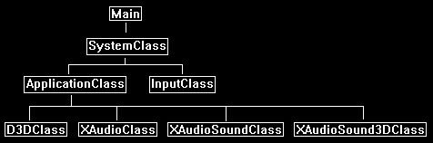

XAudio2 is capable of playing 3D sounds similar to DirectSound.
The portion of the XAudio2 API responsible for 3D sound is called X3DAudio.
Unlike converting DirectSound to XAudio2, the X3DAudio portion works very differently than its predecessor, and requires some major changes to use.
In the tutorial we will cover the changes required to implement X3DAudio in XAudio2.
And we will also show how to play a 3D sound the same as we did in tutorial 56 with DirectSound.
Framework
The framework for this tutorial contains a new class called XAudioSound3DClass.
This will be similar to the Sound3DClass from tutorial 56 where we will encapsulate a single 3D sound in each class object.

Xaudioclass.h
The XAudioClass has been modified since the last tutorial to add 3D sound capabilities.
////////////////////////////////////////////////////////////////////////////////
// Filename: xaudioclass.h
////////////////////////////////////////////////////////////////////////////////
#ifndef _XAUDIOCLASS_H_
#define _XAUDIOCLASS_H_
/////////////
// LINKING //
/////////////
#pragma comment(lib, "Xaudio2.lib")
We will include the x3daudio.h header file.
//////////////
// INCLUDES //
//////////////
#include <xaudio2.h>
#include <x3daudio.h>
#include <stdio.h>
////////////////////////////////////////////////////////////////////////////////
// Class name: XAudioClass
////////////////////////////////////////////////////////////////////////////////
class XAudioClass
{
public:
XAudioClass();
XAudioClass(const XAudioClass&);
~XAudioClass();
We add a Frame function that will be used by 3D sounds for frame updates.
bool Initialize();
void Shutdown();
bool Frame(X3DAUDIO_EMITTER, IXAudio2SourceVoice*);
IXAudio2* GetXAudio2();
private:
IXAudio2* m_xAudio2;
IXAudio2MasteringVoice* m_masterVoice;
We have added a number of private variables to support 3D sound processing.
We will review what each does in the .cpp file.
X3DAUDIO_HANDLE m_X3DInstance;
X3DAUDIO_LISTENER m_listener;
XAUDIO2_VOICE_DETAILS m_deviceDetails;
float* m_matrixCoefficients;
X3DAUDIO_DSP_SETTINGS m_DSPSettings;
};
#endif
Xaudioclass.cpp
///////////////////////////////////////////////////////////////////////////////
// Filename: xaudioclass.cpp
///////////////////////////////////////////////////////////////////////////////
#include "xaudioclass.h"
XAudioClass::XAudioClass()
{
m_xAudio2 = 0;
m_masterVoice = 0;
m_matrixCoefficients = 0;
}
XAudioClass::XAudioClass(const XAudioClass& other)
{
}
XAudioClass::~XAudioClass()
{
}
bool XAudioClass::Initialize()
{
HRESULT result;
DWORD dwChannelMask;
// Initialize COM first.
result = CoInitializeEx(nullptr, COINIT_MULTITHREADED);
if(FAILED(result))
{
return false;
}
// Create an instance of the XAudio2 engine.
result = XAudio2Create(&m_xAudio2, 0, XAUDIO2_USE_DEFAULT_PROCESSOR);
if(FAILED(result))
{
return false;
}
// Create the mastering voice.
result = m_xAudio2->CreateMasteringVoice(&m_masterVoice);
if(FAILED(result))
{
return false;
}
To initialize 3D audio, we first get the channel mask for the speaker setup, and then we call X3DAudioInitialize with that channel mask and the handle tot he X3D instance.
// Get the speaker setup for 3D audio settings.
m_masterVoice->GetChannelMask(&dwChannelMask);
// Initialize X3DAudio.
result = X3DAudioInitialize(dwChannelMask, X3DAUDIO_SPEED_OF_SOUND, m_X3DInstance);
if(FAILED(result))
{
return false;
}
Just like DirectSound we need to setup a listener to indicate our position and orientation of listening in the 3D world.
// Initialize the position and orientation of the 3D listener structure.
ZeroMemory(&m_listener, sizeof(&m_listener));
m_listener.Position.x = 0.0f;
m_listener.Position.y = 0.0f;
m_listener.Position.z = 0.0f;
m_listener.OrientFront.x = 0.0f;
m_listener.OrientFront.y = 0.0f;
m_listener.OrientFront.z = 1.0f;
m_listener.OrientTop.x = 0.0f;
m_listener.OrientTop.y = 1.0f;
m_listener.OrientTop.z = 0.0f;
Next, we setup basic DSP settings as they are required for 3D sound processing.
// Get the voice details for setting up the DSP settings.
m_masterVoice->GetVoiceDetails(&m_deviceDetails);
// Create the matrix coefficients array for the DSP struct.
m_matrixCoefficients = new float[m_deviceDetails.InputChannels];
// Create an instance of the dsp settings structure.
ZeroMemory(&m_DSPSettings, sizeof(&m_DSPSettings));
m_DSPSettings.SrcChannelCount = 1;
m_DSPSettings.DstChannelCount = m_deviceDetails.InputChannels;
m_DSPSettings.pMatrixCoefficients = m_matrixCoefficients;
return true;
}
void XAudioClass::Shutdown()
{
// Release the matrix coefficients array.
if(m_matrixCoefficients)
{
delete [] m_matrixCoefficients;
m_matrixCoefficients = 0;
}
// Release the master voice.
if(m_masterVoice)
{
m_masterVoice->DestroyVoice();
m_masterVoice = 0;
}
// Release the Xaudio2 interface.
if(m_xAudio2)
{
m_xAudio2->Release();
m_xAudio2 = 0;
}
// Uninitialize COM.
CoUninitialize();
return;
}
We have a new function called Frame.
This is one of the major differences in processing 3D sound using X3DAudio in comparison to using DirectSound.
Each frame (or it can be each 3-4 frames depending on your sound update requirements) this function will be called for each 3D sound you are currently playing.
Each frame you need to pass every 3D sound voice that is playing into this function one at a time, and then use X3DAudioCalculate to update the DSP settings for the 3D sound using the 3D sound's position (emitter).
Then with the updated DSP settings you can apply them to the 3D sound voice using SetOutputMatrix and SetFrequencyRatio.
Also, if you are applying any other effects to the 3D sounds you would do it by passing in additional flags to X3DAudioCalculate and call the corresponding Set function for the voice.
In DirectSound this was all handled for you.
But to break out submixing so you have more control of the effects on each 3D sound, this needs to be under your control.
And hence why we have this major change to 3D audio processing in X3DAudio.
bool XAudioClass::Frame(X3DAUDIO_EMITTER emitter, IXAudio2SourceVoice* sourceVoice)
{
HRESULT result;
// Call X3DAudioCalculate to calculate new settings for the voices.
X3DAudioCalculate(m_X3DInstance, &m_listener, &emitter, X3DAUDIO_CALCULATE_MATRIX | X3DAUDIO_CALCULATE_DOPPLER | X3DAUDIO_CALCULATE_LPF_DIRECT | X3DAUDIO_CALCULATE_REVERB, &m_DSPSettings);
// Use SetOutputMatrix and SetFrequencyRatio to apply the volume and pitch values to the source voice.
result = sourceVoice->SetOutputMatrix(m_masterVoice, 1, m_deviceDetails.InputChannels, m_DSPSettings.pMatrixCoefficients);
if(FAILED(result))
{
return false;
}
result = sourceVoice->SetFrequencyRatio(m_DSPSettings.DopplerFactor);
if(FAILED(result))
{
return false;
}
return true;
}
IXAudio2* XAudioClass::GetXAudio2()
{
return m_xAudio2;
}
Xaudiosound3dclass.h
The XAudioSound3DClass is the equivalent of the Sound3DClass we used in tutorial 56.
It has all the changes needed to support playing mono 3D sounds for X3DAudio.
The major difference being that it no longer uses secondary 3D buffers, and instead uses voices and emitters.
////////////////////////////////////////////////////////////////////////////////
// Filename: xaudiosound3dclass.h
////////////////////////////////////////////////////////////////////////////////
#ifndef _XAUDIOSOUND3DCLASS_H_
#define _XAUDIOSOUND3DCLASS_H_
///////////////////////
// MY CLASS INCLUDES //
///////////////////////
#include "xaudioclass.h"
////////////////////////////////////////////////////////////////////////////////
// Class name: XAudioSound3DClass
////////////////////////////////////////////////////////////////////////////////
class XAudioSound3DClass
{
private:
We use the same headers to load mono .WAV files like we did in the previous tutorials.
struct RiffWaveHeaderType
{
char chunkId[4];
unsigned long chunkSize;
char format[4];
};
struct SubChunkHeaderType
{
char subChunkId[4];
unsigned long subChunkSize;
};
struct FmtType
{
unsigned short audioFormat;
unsigned short numChannels;
unsigned long sampleRate;
unsigned long bytesPerSecond;
unsigned short blockAlign;
unsigned short bitsPerSample;
};
public:
XAudioSound3DClass();
XAudioSound3DClass(const XAudioSound3DClass&);
~XAudioSound3DClass();
We have the same public functions that we did in the Sound3DClass except for the new GetSourceVoice and GetEmitter helper functions which are used to provide X3DAudio access to this 3D sound.
bool LoadTrack(IXAudio2*, char*, float);
void ReleaseTrack();
IXAudio2SourceVoice* GetSourceVoice();
X3DAUDIO_EMITTER GetEmitter();
bool PlayTrack();
bool StopTrack();
void Update3DPosition(float, float, float);
private:
We have a new private function called InitializeEmitter which initializes the 3D position and orientation of this sound in the 3D world.
void InitializeEmitter();
bool LoadMonoWaveFile(IXAudio2*, char*, float);
void ReleaseWaveFile();
private:
The class will require an emitter to represent the position of the 3D sound, a source voice to represent the interface to this sound,
an audio buffer struct to point to where the data is, and an unsigned char array to hold the .WAV data.
X3DAUDIO_EMITTER m_emitter;
unsigned char* m_waveData;
XAUDIO2_BUFFER m_audioBuffer;
IXAudio2SourceVoice* m_sourceVoice;
};
#endif
Xaudiosound3dclass.cpp
///////////////////////////////////////////////////////////////////////////////
// Filename: xaudiosound3dclass.cpp
///////////////////////////////////////////////////////////////////////////////
#include "xaudiosound3dclass.h"
XAudioSound3DClass::XAudioSound3DClass()
{
m_waveData = 0;
m_sourceVoice = 0;
}
XAudioSound3DClass::XAudioSound3DClass(const XAudioSound3DClass& other)
{
}
XAudioSound3DClass::~XAudioSound3DClass()
{
}
The loading/unloading and playing/stopping functions are similar to the previous tutorial.
However, the LoadTrack function has an extra InitializeEmitter function to set a starting location and orientation for this 3D sounds location.
bool XAudioSound3DClass::LoadTrack(IXAudio2* XAudio2, char* filename, float volume)
{
bool result;
// Initialize the location of the emitter for this 3D sound.
InitializeEmitter();
// Load the wave file for the sound.
result = LoadMonoWaveFile(XAudio2, filename, volume);
if(!result)
{
return false;
}
return true;
}
void XAudioSound3DClass::ReleaseTrack()
{
// Destory the voice.
if(m_sourceVoice)
{
m_sourceVoice->DestroyVoice();
m_sourceVoice = 0;
}
// Release the wave file buffers.
ReleaseWaveFile();
return;
}
bool XAudioSound3DClass::PlayTrack()
{
HRESULT result;
// Play the track.
result = m_sourceVoice->Start(0, XAUDIO2_COMMIT_NOW);
if(FAILED(result))
{
return false;
}
return true;
}
bool XAudioSound3DClass::StopTrack()
{
HRESULT result;
// Play the track.
result = m_sourceVoice->Stop(0);
if(FAILED(result))
{
return false;
}
// Flush the buffers to remove them and reset the audio position to the beginning.
result = m_sourceVoice->FlushSourceBuffers();
if(FAILED(result))
{
return false;
}
// Resubmit the buffer to the source voice after the reset so it is prepared to play again.
result = m_sourceVoice->SubmitSourceBuffer(&m_audioBuffer);
if(FAILED(result))
{
return false;
}
return true;
}
Similar to DirectSound we have to set the position of the 3D sound.
But instead of updating a buffer, we just update the emitter struct with the new position information.
void XAudioSound3DClass::Update3DPosition(float x, float y, float z)
{
m_emitter.Position.x = x;
m_emitter.Position.y = y;
m_emitter.Position.z = z;
return;
}
These are the two new helper functions used to get access to the voice and the emitter for this 3D sound.
IXAudio2SourceVoice* XAudioSound3DClass::GetSourceVoice()
{
return m_sourceVoice;
}
X3DAUDIO_EMITTER XAudioSound3DClass::GetEmitter()
{
return m_emitter;
}
The InitializeEmitter function will set initial basic settings for the emitter of this 3D sound.
void XAudioSound3DClass::InitializeEmitter()
{
ZeroMemory(&m_emitter, sizeof(&m_emitter));
m_emitter.ChannelCount = 1;
m_emitter.CurveDistanceScaler = 1.0f;
m_emitter.DopplerScaler = 1.0f;
// Set an initial position for the sound.
m_emitter.Position.x = 0.0f;
m_emitter.Position.y = 0.0f;
m_emitter.Position.z = 0.0f;
return;
}
The LoadMonoWaveFile function works the same as the previous tutorial's LoadStereoWaveFile function.
But it does have one check to ensure that the file is a mono track instead of stereo.
bool XAudioSound3DClass::LoadMonoWaveFile(IXAudio2* xAudio2, char* filename, float volume)
{
FILE* filePtr;
RiffWaveHeaderType riffWaveFileHeader;
SubChunkHeaderType subChunkHeader;
FmtType fmtData;
WAVEFORMATEX waveFormat;
int error;
unsigned long long count;
long seekSize;
unsigned long dataSize;
bool foundFormat, foundData;
HRESULT result;
// Open the wave file for reading in binary.
error = fopen_s(&filePtr, filename, "rb");
if(error != 0)
{
return false;
}
// Read in the riff wave file header.
count = fread(&riffWaveFileHeader, sizeof(riffWaveFileHeader), 1, filePtr);
if(count != 1)
{
return false;
}
// Check that the chunk ID is the RIFF format.
if((riffWaveFileHeader.chunkId[0] != 'R') || (riffWaveFileHeader.chunkId[1] != 'I') || (riffWaveFileHeader.chunkId[2] != 'F') || (riffWaveFileHeader.chunkId[3] != 'F'))
{
return false;
}
// Check that the file format is the WAVE format.
if((riffWaveFileHeader.format[0] != 'W') || (riffWaveFileHeader.format[1] != 'A') || (riffWaveFileHeader.format[2] != 'V') || (riffWaveFileHeader.format[3] != 'E'))
{
return false;
}
// Read in the sub chunk headers until you find the format chunk.
foundFormat = false;
while(foundFormat == false)
{
// Read in the sub chunk header.
count = fread(&subChunkHeader, sizeof(subChunkHeader), 1, filePtr);
if(count != 1)
{
return false;
}
// Determine if it is the fmt header. If not then move to the end of the chunk and read in the next one.
if((subChunkHeader.subChunkId[0] == 'f') && (subChunkHeader.subChunkId[1] == 'm') && (subChunkHeader.subChunkId[2] == 't') && (subChunkHeader.subChunkId[3] == ' '))
{
foundFormat = true;
}
else
{
fseek(filePtr, subChunkHeader.subChunkSize, SEEK_CUR);
}
}
// Read in the format data.
count = fread(&fmtData, sizeof(fmtData), 1, filePtr);
if(count != 1)
{
return false;
}
// Check that the audio format is WAVE_FORMAT_PCM.
if(fmtData.audioFormat != WAVE_FORMAT_PCM)
{
return false;
}
Ensure that this file is mono (single channel).
// Check that the wave file was recorded in mono format.
if(fmtData.numChannels != 1)
{
return false;
}
// Check that the wave file was recorded at a sample rate of 44.1 KHz.
if(fmtData.sampleRate != 44100)
{
return false;
}
// Ensure that the wave file was recorded in 16 bit format.
if(fmtData.bitsPerSample != 16)
{
return false;
}
// Seek up to the next sub chunk.
seekSize = subChunkHeader.subChunkSize - 16;
fseek(filePtr, seekSize, SEEK_CUR);
// Read in the sub chunk headers until you find the data chunk.
foundData = false;
while(foundData == false)
{
// Read in the sub chunk header.
count = fread(&subChunkHeader, sizeof(subChunkHeader), 1, filePtr);
if(count != 1)
{
return false;
}
// Determine if it is the data header. If not then move to the end of the chunk and read in the next one.
if((subChunkHeader.subChunkId[0] == 'd') && (subChunkHeader.subChunkId[1] == 'a') && (subChunkHeader.subChunkId[2] == 't') && (subChunkHeader.subChunkId[3] == 'a'))
{
foundData = true;
}
else
{
fseek(filePtr, subChunkHeader.subChunkSize, SEEK_CUR);
}
}
// Store the size of the data chunk.
dataSize = subChunkHeader.subChunkSize;
// Create a temporary buffer to hold the wave file data.
m_waveData = new unsigned char[dataSize];
// Read in the wave file data into the newly created buffer.
count = fread(m_waveData, 1, dataSize, filePtr);
if(count != dataSize)
{
return false;
}
// Close the file once done reading.
error = fclose(filePtr);
if(error != 0)
{
return false;
}
// Set the wave format of secondary buffer that this wave file will be loaded onto.
waveFormat.wFormatTag = WAVE_FORMAT_PCM;
waveFormat.nSamplesPerSec = fmtData.sampleRate;
waveFormat.wBitsPerSample = fmtData.bitsPerSample;
waveFormat.nChannels = fmtData.numChannels;
waveFormat.nBlockAlign = (waveFormat.wBitsPerSample / 8) * waveFormat.nChannels;
waveFormat.nAvgBytesPerSec = waveFormat.nSamplesPerSec * waveFormat.nBlockAlign;
waveFormat.cbSize = 0;
// Fill in the audio buffer struct.
m_audioBuffer.AudioBytes = dataSize; // Size of the audio buffer in bytes.
m_audioBuffer.pAudioData = m_waveData; // Buffer containing audio data.
m_audioBuffer.Flags = XAUDIO2_END_OF_STREAM; // Tell the source voice not to expect any data after this buffer
m_audioBuffer.LoopCount = 0; // Not looping. Change to XAUDIO2_LOOP_INFINITE for looping.
m_audioBuffer.PlayBegin = 0;
m_audioBuffer.PlayLength = 0;
m_audioBuffer.LoopBegin = 0;
m_audioBuffer.LoopLength = 0;
m_audioBuffer.pContext = NULL;
// Create the source voice for this buffer.
result = xAudio2->CreateSourceVoice(&m_sourceVoice, &waveFormat, 0, XAUDIO2_DEFAULT_FREQ_RATIO, NULL, NULL, NULL);
if(FAILED(result))
{
return false;
}
// Submit the audio buffer to the source voice.
result = m_sourceVoice->SubmitSourceBuffer(&m_audioBuffer);
if(FAILED(result))
{
return false;
}
// Set volume of the buffer.
m_sourceVoice->SetVolume(volume);
return true;
}
The ReleaseWaveFile will release our unsigned char array containing the .WAV data.
void XAudioSound3DClass::ReleaseWaveFile()
{
// Release the wave data only after voice destroyed.
if(m_waveData)
{
delete [] m_waveData;
m_waveData = 0;
}
return;
}
Applicationclass.h
We have modified the ApplicationClass from the last tutorial to now include the ability to play a 3D sound.
////////////////////////////////////////////////////////////////////////////////
// Filename: applicationclass.h
////////////////////////////////////////////////////////////////////////////////
#ifndef _APPLICATIONCLASS_H_
#define _APPLICATIONCLASS_H_
/////////////
// GLOBALS //
/////////////
const bool FULL_SCREEN = false;
const bool VSYNC_ENABLED = true;
const float SCREEN_NEAR = 0.3f;
const float SCREEN_DEPTH = 1000.0f;
Include the new header and object for the XAudioSound3DClass.
We also have a new SoundProcessing function.
///////////////////////
// MY CLASS INCLUDES //
///////////////////////
#include "d3dclass.h"
#include "inputclass.h"
#include "xaudioclass.h"
#include "xaudiosoundclass.h"
#include "xaudiosound3dclass.h"
////////////////////////////////////////////////////////////////////////////////
// Class name: ApplicationClass
////////////////////////////////////////////////////////////////////////////////
class ApplicationClass
{
public:
ApplicationClass();
ApplicationClass(const ApplicationClass&);
~ApplicationClass();
bool Initialize(int, int, HWND);
void Shutdown();
bool Frame(InputClass*);
private:
bool SoundProcessing();
bool Render();
private:
D3DClass* m_Direct3D;
XAudioClass* m_XAudio;
XAudioSound3DClass* m_TestSound2;
};
#endif
Applicationclass.cpp
////////////////////////////////////////////////////////////////////////////////
// Filename: applicationclass.cpp
////////////////////////////////////////////////////////////////////////////////
#include "applicationclass.h"
ApplicationClass::ApplicationClass()
{
m_Direct3D = 0;
m_XAudio = 0;
m_TestSound2 = 0;
}
ApplicationClass::ApplicationClass(const ApplicationClass& other)
{
}
ApplicationClass::~ApplicationClass()
{
}
bool ApplicationClass::Initialize(int screenWidth, int screenHeight, HWND hwnd)
{
char soundFilename[128];
bool result;
// Create and initialize the Direct3D object.
m_Direct3D = new D3DClass;
result = m_Direct3D->Initialize(screenWidth, screenHeight, VSYNC_ENABLED, hwnd, FULL_SCREEN, SCREEN_DEPTH, SCREEN_NEAR);
if(!result)
{
MessageBox(hwnd, L"Could not initialize Direct3D.", L"Error", MB_OK);
return false;
}
// Create and initialize the XAudio object.
m_XAudio = new XAudioClass;
result = m_XAudio->Initialize();
if(!result)
{
MessageBox(hwnd, L"Could not initialize XAudio.", L"Error", MB_OK);
return false;
}
Load in our 3D sound file named sound02.wav.
// Create and initialize the test sound object.
m_TestSound2 = new XAudioSound3DClass;
strcpy_s(soundFilename, "../Engine/data/sound02.wav");
result = m_TestSound2->LoadTrack(m_XAudio->GetXAudio2(), soundFilename, 1.0f);
if(!result)
{
MessageBox(hwnd, L"Could not initialize test sound object 2.", L"Error", MB_OK);
return false;
}
Set the position of the 3D sound to the left and then play it.
// Set the 3D position of the sound.
m_TestSound2->Update3DPosition(-2.0f, 0.0f, 0.0f);
// Play the 3D sound.
m_TestSound2->PlayTrack();
return true;
}
void ApplicationClass::Shutdown()
{
// Release the test sound object.
if(m_TestSound2)
{
// Stop the sound if it was still playing.
m_TestSound2->StopTrack();
// Release the test sound object.
m_TestSound2->ReleaseTrack();
delete m_TestSound2;
m_TestSound2 = 0;
}
// Release the XAudio object.
if(m_XAudio)
{
m_XAudio->Shutdown();
delete m_XAudio;
m_XAudio = 0;
}
// Release the Direct3D object.
if(m_Direct3D)
{
m_Direct3D->Shutdown();
delete m_Direct3D;
m_Direct3D = 0;
}
return;
}
bool ApplicationClass::Frame(InputClass* Input)
{
bool result;
// Check if the escape key has been pressed, if so quit.
if(Input->IsEscapePressed() == true)
{
return false;
}
Each frame we will call the SoundProcessing function to update all the 3D sounds we are playing.
// Do the frame sound processing for 3D audio.
result = SoundProcessing();
if(!result)
{
return false;
}
// Render the final graphics scene.
result = Render();
if(!result)
{
return false;
}
return true;
}
Each frame we need to send all of our currently playing 3D sounds into our XAudio2 class object to update each one of them.
bool ApplicationClass::SoundProcessing()
{
bool result;
// Do the frame processing for each sound.
result = m_XAudio->Frame(m_TestSound2->GetEmitter(), m_TestSound2->GetSourceVoice());
if(!result)
{
return false;
}
return true;
}
bool ApplicationClass::Render()
{
// Clear the buffers to begin the scene.
m_Direct3D->BeginScene(0.25f, 0.25f, 0.25f, 1.0f);
// Present the rendered scene to the screen.
m_Direct3D->EndScene();
return true;
}
Summary
We can now play 3D sound in XAudio2 using X3DAudio.
To Do Exercises
1. Compile and run the program. You should hear the 3D sound play to the far left. Press escape to quit.
2. Add an additional 3D sound to be played at the same time.
3. Research and implement a reverb DSP effect on one of the 3D sounds. The XAudio2 programming guide has an example.
Source Code
Source Code and Data Files: dx11win10tut58_src.zip